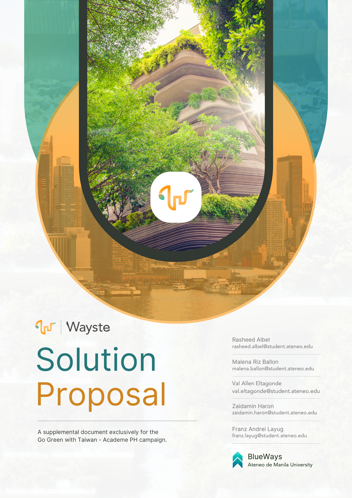
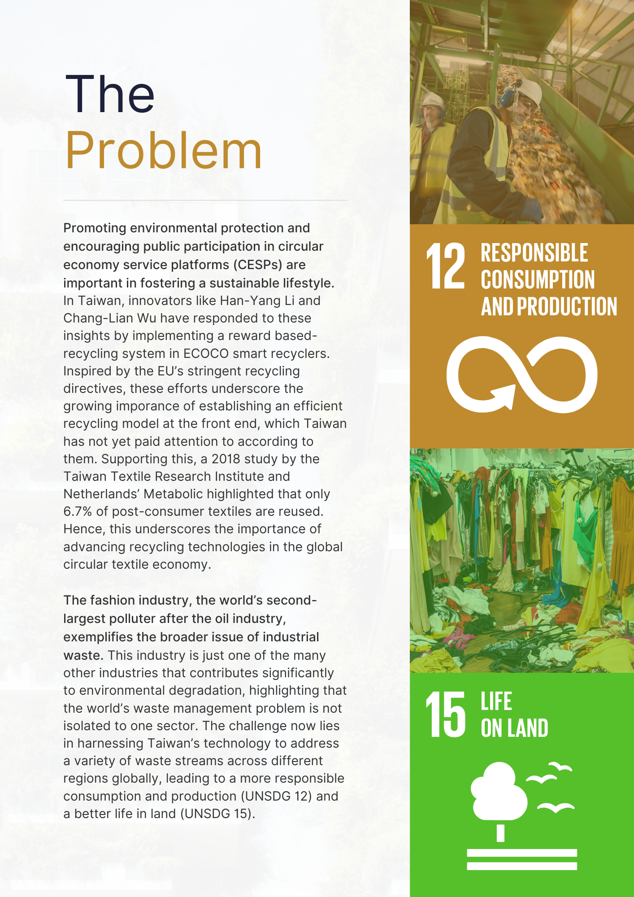
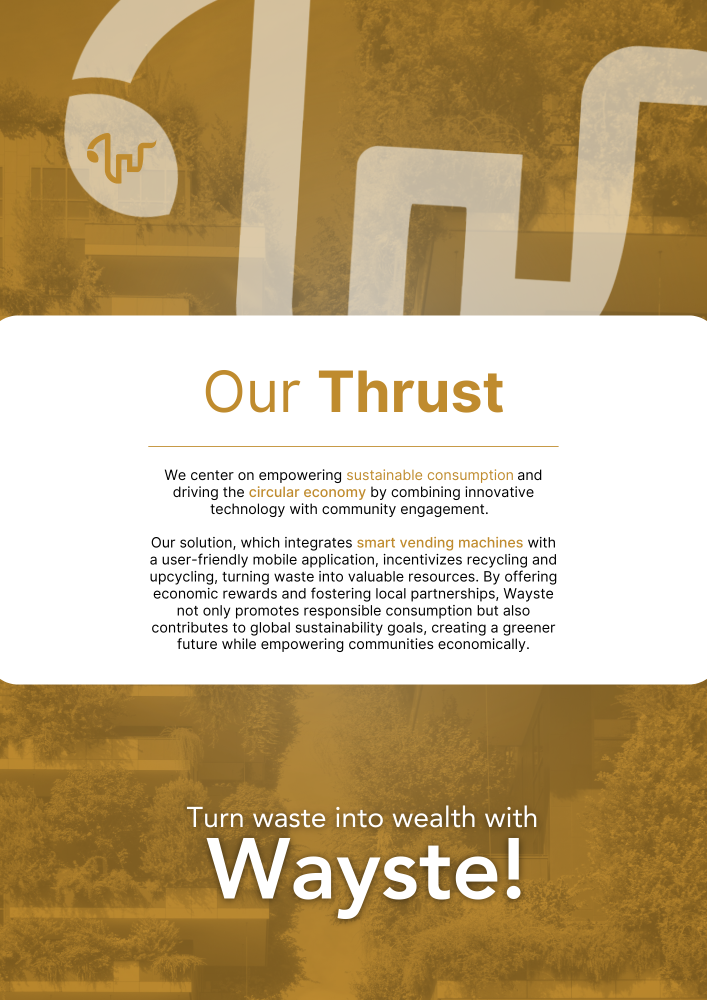
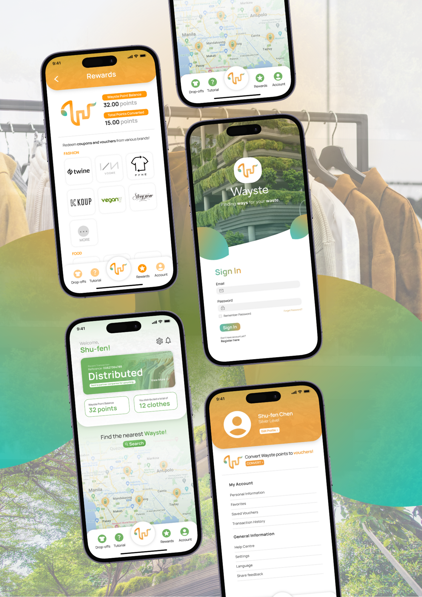
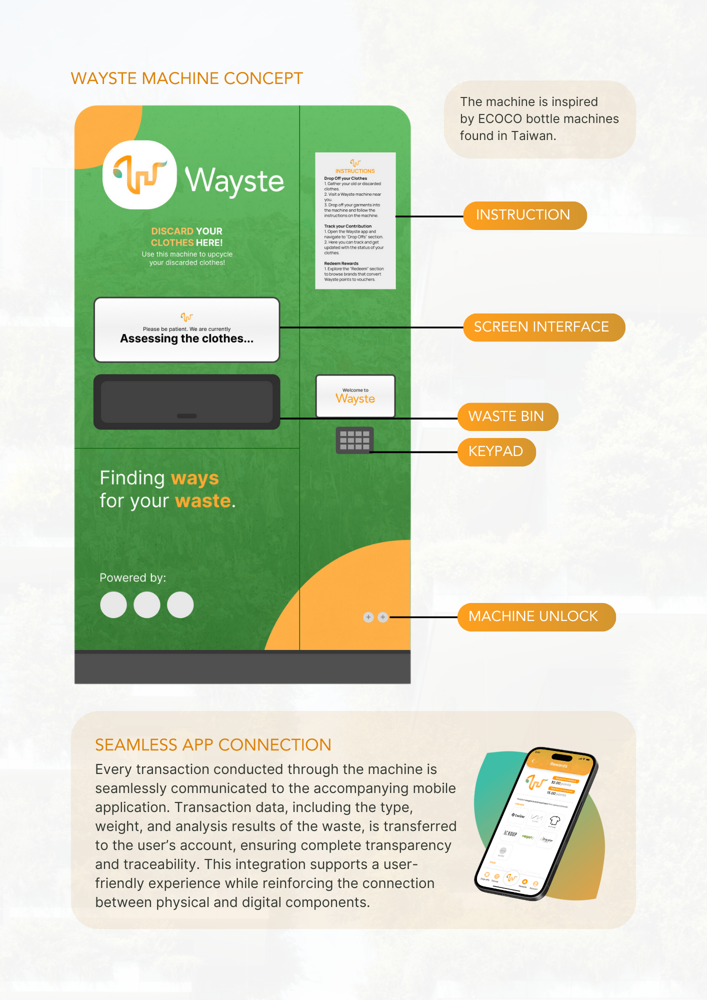
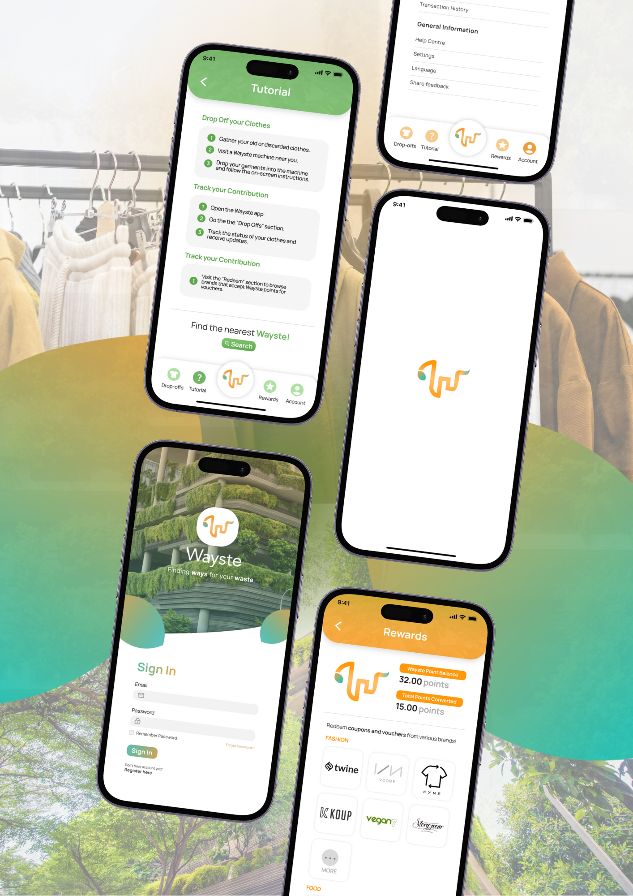

Go Green with Taiwan
Go Green with Taiwan - Academe PH Proposal Campaign



Some pages from our Solution Proposal
Overview
To address the environmental challenges of the fast fashion industry by embedding circular economy principles into textile waste management, my team proposed Wayste: a two-pronged intelligent system composed of a physical machine and a mobile application that innovates the the collection, analysis, and incentivization of fabric recycling and upcycling. Made possible by synergizing with Taiwanese technology, Wayste aims to promote a sustainable, closed-loop system that minimizes textile waste and supports a more responsible consumption model.
Our solution was one of the 20 local winners of the global contest, besting various teams from all over the country.
Key Features
As mentioned, Wayste is composed of two systems: The Wayste Machine and the Wayste App.



Wayste Machine
Wayste machines serve as portable and self-sustaining terminals placed on strategic locations where consumers provide their fabric and textile waste. Its features include:
Waste Acceptance: The machine empowers consumers to actively participate in waste reduction by offering a simple, guided process for waste donation. Upon initiating a transaction, users contribute fabric or textile waste, regardless of type. The machine is prepared to handle the waste efficiently and appropriately.
Waste Verification: Through embedded sensors, the machine verifies the type and weight of the submitted waste. This step ensures that the material matches the user’s selection, maintaining the system’s integrity and accuracy. The machine’s meticulous verification process guarantees that only suitable waste is processed, contributing to higher quality recycling outcomes.
AI-Driven Fabric Analysis: This advanced system conducts a thorough examination of the material, determining its composition, quality, and potential for reuse. By leveraging artificial intelligence, the machine can make informed decisions on how to best repurpose the waste, aligning with sustainability goals and minimizing environmental impact.
Automated Waste Sorting: Following analysis, the machine automatically sorts the waste based on its type and condition. Whether the fabric is fit for upcycling, recycling, or other sustainable processes, the machine categorizes it accordingly. This automated sorting system enhances efficiency, ensuring that each piece of waste is directed to the most appropriate processing stream.
Wayste App
Wayste machines are complemented by the Wayste app that offers a plethora of features from managing donated waste to learning more. Its features include:
User Account Management: The app offers a comprehensive user account management system, enabling individuals to register, log in, and manage their profiles with ease. Through their accounts, users can track their contributions, view transaction histories, and stay engaged with the platform’s sustainability initiatives.
Tiered Incentive System: The application introduces a dynamic points or currency system that rewards users for their contributions. This system is designed with tiers, offering escalating benefits based on the frequency of waste donations. Users can earn points that reflect their commitment to sustainability, which can be redeemed for rewards, further encouraging ongoing participation.
Sustainable Rewards: To enhance the value of the points earned, the application connects users to an online marketplace or store, focused on sustainable brands and companies within Taiwan. Here, users can spend their points on eco-friendly products and services, ranging beyond just clothing, thereby promoting a holistic approach to sustainable living.
Interactive Map: The app features an interactive map that allows users to locate nearby machines. This function is designed to facilitate convenient waste disposal, ensuring that users can easily access the system, no matter their location. The map also provides real-time updates on machine availability, making the process as efficient and user-friendly as possible.
Product Traceability: Transparency is a key feature of this solution, and the application’s product traceability feature reflects this commitment. Users can follow the journey of their donated fabric from the moment it is deposited to its final destination, whether it’s being upcycled, recycled, or otherwise repurposed. This feature not only builds trust but also reinforces the tangible impact of each user’s actions.
Feature Feasibliity
To drive environmental sustainability through revolutionizing textile upcycling, Wayste will establish key strategic partnerships with leading Taiwanese brands and enterprises dedicated to circular economy practices. These collaborations are also key to ensure Wayste’s features become feasible.
- ECOCO’s smart machines and app
- Pade Technology’s advanced textile sorting systems
- Tainan Enterprises’ Fabric Bank, Story
- Story Wear’s fabric upcycling process
- DA.AI’s quality eco-friendly fabric reproduction
These partnerships of Wayste with Taiwan’s top sustainable enterprises will drive a new standard in textile recycling and upcycling, showcasing Taiwan’s leadership in responsible consumption and sustainability to the world.
Links
About the Contest
The “Go Green with Taiwan - Academe PH” proposal campaign is an initiative focused on fostering a sustainable future in collaboration with Taiwan. The campaign invites participants to contribute innovative ideas that aim to improve the world by integrating products or solutions from Taiwanese enterprises to promote “environmental sustainability” or “economic sustainability.”